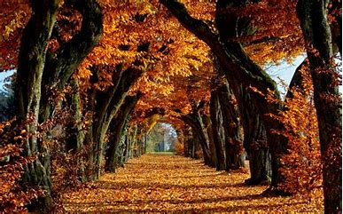
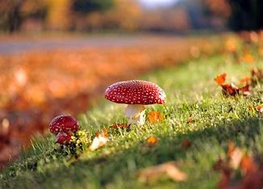

What to do in autumn?
Autumn is lovely season when weather temperature is still warm and there is lot of options for spending good quality time at the nature

One of the nicest seasons in the year in Latvia is Autumn. Autums colors are remarkable.
In Autumn trees gets yellow, orange and red.
The best acitivities for Autumn:
- Go to see the most beautiful scienerie
- Pick up the mushrooms
- Do lovely autumn walks in the nature
- To play discgolf
The best tracks to play discgolf in Autumn:
Disku golfa laukumi Latvijá
Disc Golf is a variant of ball golf, but with special frisbees or flying discs. However, instead of hitting a ball off a tee and aiming at getting it down a hole in as few strokes as possible, disc golf involves throwing a disc from the tee and hitting an above-ground target in as few throws as you can.
The best hiking routes in Latvia:
DABAS TAKAS
Hiking is a long, vigorous walk, usually on trails or footpaths in the countryside. Walking for pleasure was developed in Europe during the eighteenth century.
Where to go for mushrooms:
- To the woods
- To nature parks
- To nature reserves, trails
Autumn is already here. It is not long, so we should use this time for nice leasure acitivities
Autumn is great season to go out of home and do something nice at the nature
Latin: Amanita muscaria
 Mushroom picking is very popular in Latvia. In a short period from the end of August till the middle of October the woods are full of people hunting and gathering fungi with a knife and basket. For those who love Nature and walking in the woods, this is nice experience to see something different.
The best thing to do in autumn is to pick up the mushrooms.
Developed by Anda Stale
Back to top